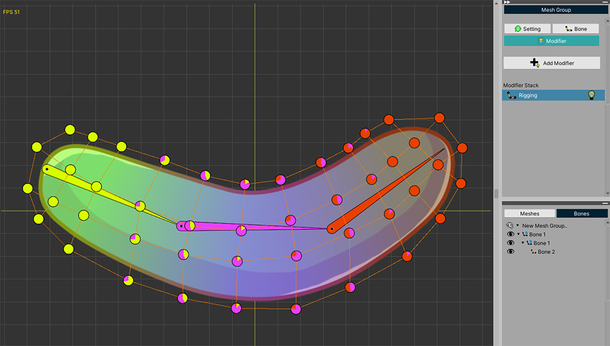
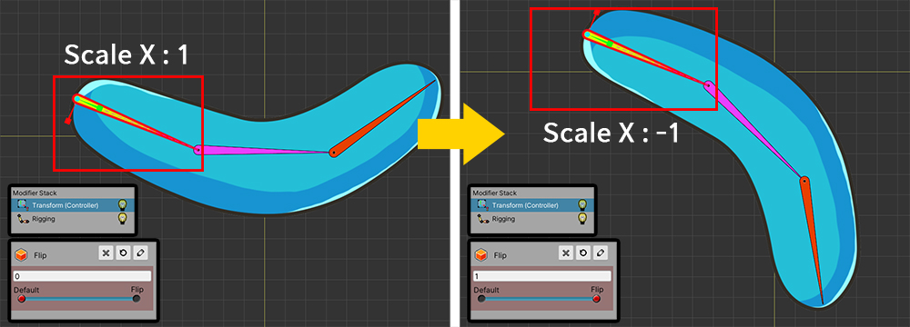
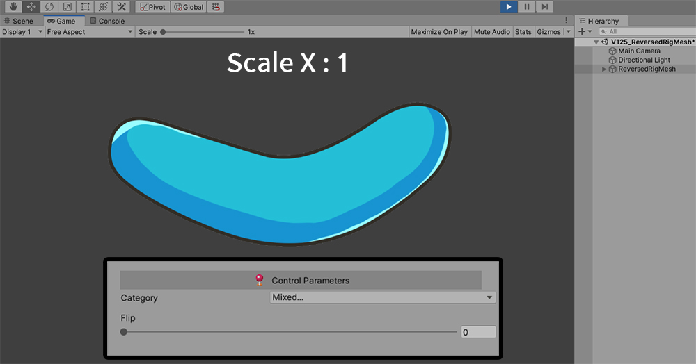
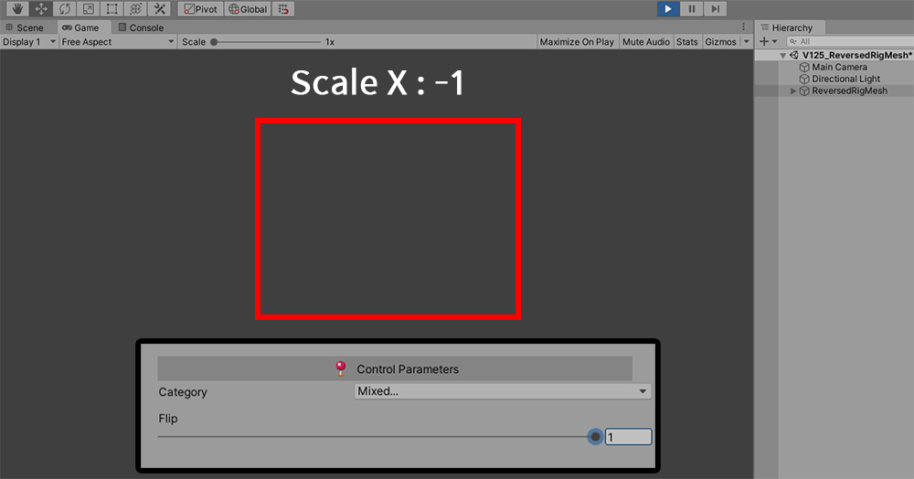
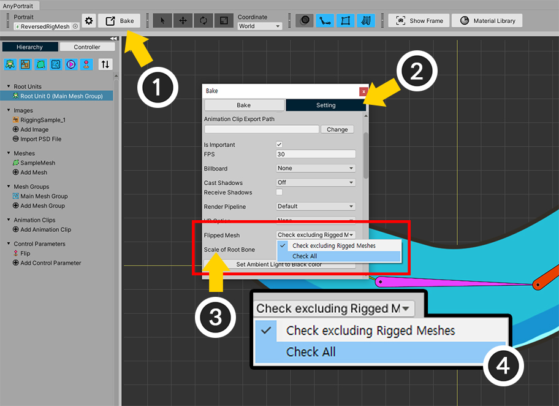
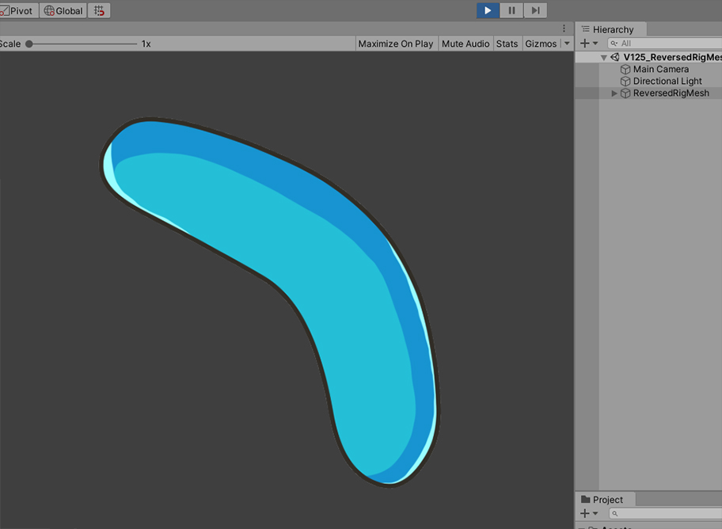

AnyPortrait > 메뉴얼 > 리깅된 메시의 크기가 반전된 경우
리깅된 메시의 크기가 반전된 경우
1.2.5
AnyPortrait로 제작된 캐릭터를 유니티 씬으로 옮기면, 캐릭터는 단면의 MeshRenderer들의 조합으로 구성됩니다.
만약 메시의 크기가 반전되거나 GameObject가 반전되면, 메시의 뒷면이 보여질 것입니다.
하지만 양면 렌더링을 설정하지 않았다면 메시의 뒷면은 게임에서 렌더링되지 않습니다.
(참고 : 양면 렌더링 설정하는 방법)
다행히도, AnyPortrait는 메시의 크기가 반전된 경우에도 정상적으로 렌더링이 되도록 처리를 하는 기능이 있습니다. (참고 : 크기가 반전된 메시)
하지만 이 기능은 리깅이 적용되지 않은 메시로 한정됩니다.
리깅이 적용된 메시는, 연결된 본들의 크기 반전 여부를 모두 확인해야하므로, 성능을 저하시킬 우려가 있습니다.
하지만 리깅이 된 메시들의 크기를 반전시켜야 할 경우도 있으므로, AnyPortrait v1.2.5에서 크기 반전을 확인하는 옵션이 추가되었습니다.
이 페이지에 소개된 옵션을 이용하면 양면 렌더링을 적용하지 않고도 리깅이 적용된 메시들의 크기를 정상적으로 반전시키는 것이 가능합니다.

간단한 설명을 위해 메시와 본들을 준비했습니다.
3개의 본들이 1개의 메시에 연결된 상태입니다.

3개의 본들 중에서 부모 본인 녹색 본의 크기를 컨트롤 파라미터에 따라 반전시켜봅시다.
왼쪽의 이미지는 기본 상태이며, 오른쪽의 이미지는 크기가 반전된 상태입니다.
마찬가지로, 리깅이 된 메시의 크기도 반전되었습니다.

Bake를 실행한 후 유니티 씬에서 실행해봅시다.
기본 상태에서 메시는 정상적으로 렌더링이 됩니다.

컨트롤 파라미터의 값을 변경해서 본의 크기가 반전된 상태로 만들면, 메시는 렌더링되지 않습니다.

실제로는 메시는 사라진 것이 아니며, 크기가 바뀌어서 뒷면이 앞으로 나온 상태입니다.
다만, 메시의 뒷면은 기본적으로 렌더링이 되지 않기 때문에 메시가 사라진 것처럼 보여집니다.
기존에는 이 문제를 해결하기 위해서 메시가 양면으로 렌더링되도록(관련 페이지) 설정해야합니다.
하지만 v1.2.5에서 추가된 옵션을 이용하여 이 문제를 해결할 수도 있습니다.

AnyPortrait 에디터를 열고,
(1) Bake 버튼을 누릅니다.
(2) Setting 탭을 선택합니다.
(3) Flipped Mesh 옵션의 값이 Check excluding Rigged Meshes로 되어 있는 것을 볼 수 있습니다.
(4) 옵션의 값을 Check All로 변경합니다.
- Check excluding Rigged Meshes : 리깅된 메시를 제외하고 크기가 반전된 메시가 렌더링되도록 만듭니다.
- Check All : 가능한 모든 경우에 대해서 크기가 반전된 메시가 렌더링되도록 만듭니다.

다시 Bake를 실행하고 게임을 실행하면, 본의 크기가 반전되어서 메시가 뒤집혀도, 정상적으로 렌더링되는 것을 볼 수 있습니다.
주의 사항
- Check All로 옵션을 변경하면 모든 리깅 값을 매 프레임마다 체크하므로 성능이 저하될 수 있습니다.
- 메시에 리깅된 모든 본들 중 일부 본들만 크기가 반전된 경우, 메시는 정상적으로 렌더링 되지 않을 수 있습니다.